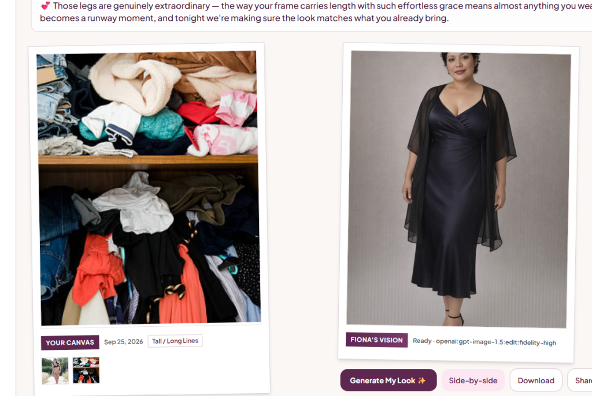
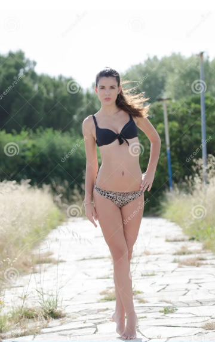

Prefer person over closet — expected after fix
Before: Your Canvas hero was the closet shelf (latest upload) while the bikini person sat in a thumb. Vision edited from the closet identity path.
After: Canvas hero + Vision identity = latest person/selfie. Closet informs wardrobe text only.

Before — closet as Your Canvas hero; bikini only in thumbs; matronly Vision dress.

Identity photo that must be Canvas hero + Vision edit input whenever present.
- Upload order bikini → closet must still show bikini as hero.
- Thumb click selects hero; Style re-render must not reset away from person unless Debra picked closet.
- Generate My Look always passes person selfie when one exists.
- Swimwear canvas → hot-on-her / occasion-aware Style, not black midi + cardigan armor.